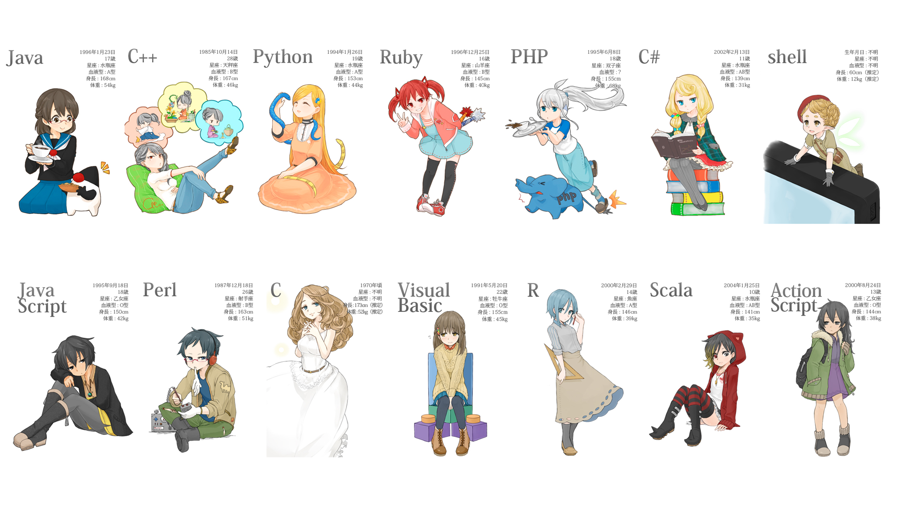

Current Features Hit List: (PLEASE SAVE ME)
Things being worked on : Dmitry, Brandon
Things To Get DONE
- Save to Google Drive
- Fill Tool & Magic Select Wand tool (Both are sort of the same)
- Undo Queue
- Send pics to discord
- Move layer position
- transparancy indicator in the actual canvas
- layer opacity
- text tool and text paste support
- selected tool highlights
- canvas image zoom
- hook up discord chat
- color wheel to start at correct color
- eye dropper tool
- eye dropper tool debug
- selection tools
- scale photos on paste in
- pressure sense
- touch screen comptible
- canvas resize
- specific layer name and opacity setting with UI
- layer visibilty carries over to save file ...
- brushes and erasor cursors
- brushes and erasor SIZE SETTING
- open files
- save files with specific name and file type
- aowolfie brush tool
- aowolfie brushes color suppor
- Add transparancy to color wheel, canvas preview, colors in general, etc
- Layer preview
Sprint Three
Optimizations and Bug Fixes
- standardize the cross window communication
- standardize canvas functions
- external file for all css, js, etc
- Fix the fact that there is legit a delay function for the saving...
- Fix snapping UI
- Sizable UI / UI FIX
- MAKE HTML "COMPLIANT"
- Layer Save Borken
- Brushes only work with already defined layer
- Brushes only work when pencil tool was selected before hand
- Base Layer does not hide after merge
- Brushes do not use color given to them
